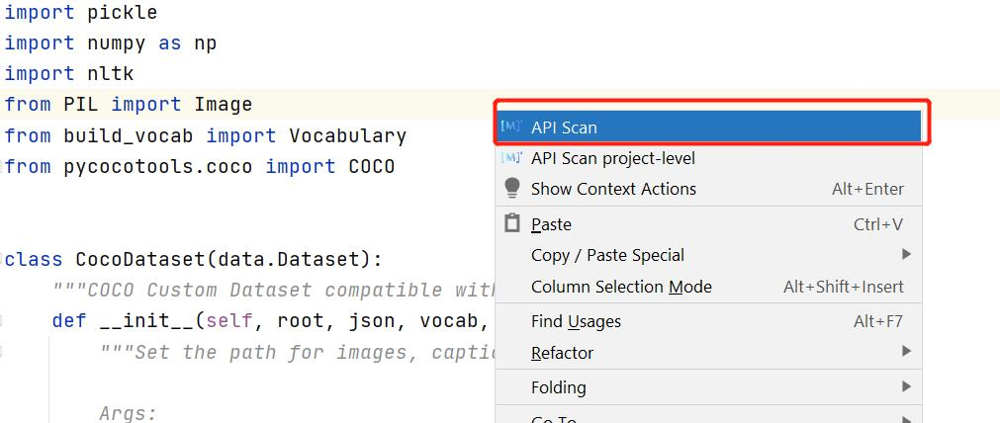

API扫描

功能介绍
快速扫描代码中出现的API，在侧边栏直接展示API详情。
为方便其他机器学习框架用户，通过扫描代码中出现的主流框架API，联想匹配对应MindSpore API。
使用步骤
文件级别API扫描
在当前文件任意位置处点击鼠标右键，打开菜单，点击菜单最上方的”API scan”。

右边栏会自动弹出，展示扫描出的API，并展示包含名称，网址等信息的详细列表。若本文件中未扫描到API，则不会弹出窗口。
其中：
“可以转换为MindSpore API的PyTorch/TensorFlow API”指在文件中被使用的且可以转换为MindSpore API的PyTorch或TensorFlow API
“暂时不能转换的API”指虽然是PyTorch或TensorFlow API的API，但是暂时没有直接对应为MindSpore API的API
“可能是PyTorch/TensorFlow API的情况”指因为链式调用的原因，有可能是PyTorch或TensorFlow的API的可转换情况
TensorFlow API扫描是实验性功能

蓝色字体的部分均可以点击，会自动在上方再打开一栏，展示网页。
点击右上角”导出”按钮，可将内容导出到csv表格。

项目级别API扫描
在当前文件任意位置处点击鼠标右键，打开菜单，点击菜单上方第二个”API scan project-level”，或在上方工具栏选择”Tools”，再选择”API scan project-level”。

右边栏会弹出整个项目中扫描出的API，并展示包含名称，网址等信息的详细列表。

在上方框中可以选择单个文件，下方框中将单独展示此文件中的API，文件选择可以随意切换。

蓝色字体部分均可以点击，会自动在上方再打开一栏，展示网页。

点击”导出”按钮，可将内容导出到csv表格。